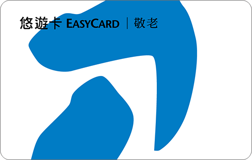

捷運大小事
捷運票券
搭乘捷運購票，主要有三種票券類型：
-
一般票卡（One-way）
-
悠遊卡（Easy Card）
-
觀光護照（Taipei Pass）
至捷運站購票機器投幣購買，可直接感應進入月台，離開出站時，請將票卡投入閘門投幣孔，則可離站。
適用於單程行程。

悠遊卡，是一張整合捷運系統、公車、停車場、特約機構等付費方式的非接觸式多功能電子票證。
全國互通的大眾運輸、超商、超市、加油站等，都可以使用悠遊卡支付扣款，便利暢行。
使用範圍：請點我看適用範圍
悠遊卡一覽表
| 票卡名稱 | 使用規範 | 卡片圖示 |
|---|---|---|
| 普通卡 | 一般民眾適用，搭乘大眾運輸以全票計費。 | |
| 學生卡 | 滿12歲以上具教育部認可有效學籍之學生身分者適用學生卡。 | |
| 優待卡 | 符合相關法令得購買半票之兒童或設籍台北市、新北市以外，年滿65歲以上之民眾及領有身心障礙手冊人士適用。 | |
| 敬老卡 | 可至合作發行縣市之鄉鎮區公所申辦；相關申請規定，依各縣市政府正式公告為準。 |  |
| 愛心卡 | 可至合作發行縣市之鄉鎮區公所申辦；相關申請規定，依各縣市政府正式公告為準。 | |
| 愛心陪伴卡 | 為記名卡，持用愛心卡者之必要陪伴人申請使用。 |

|
旅遊能玩得省錢又盡興才是高招！
「Taipei Pass台北觀光護照」票卡，使用期限內一卡在手就可不限次數搭乘台北市與新北市捷運與公車，以及台灣好行5條路線—北投竹子湖線、木柵平溪線、皇冠北海岸線、黃金福隆線及龍宮尋寶線。
讓Taipei Pass的國內外遊客能以最省錢的方式享盡旅遊樂趣。
使用期限：「台北觀光護照」之票卡使用期限，是由第一次使用當日起算，以票卡正面標示之天數為有效天數，必須連續使用，票卡自啟用當日起算，至到期日台北捷運、公車營業截止時間為止皆有效。以一日券為例，有效天數為一日，票卡使用期限為，啟用後至當日台北捷運、公車營業截止時間前有效；二日券有效天數則為啟用後連續二日，票卡啟用後至第二日台北捷運、公車營業截止時間前有效。
使用方式：使用時將卡片輕觸驗票機上「悠遊卡標誌」的感應區，即可迅速完成交易。
販售地點：請洽悠遊卡公司
旅遊能玩得省錢又盡興才是高招！「Taipei Pass台北觀光護照」票卡，使用期限內一卡在手就可不限次數搭乘台北市與新北市捷運與公車，以及台灣好行5條路線—北投竹子湖線、木柵平溪線、皇冠北海岸線、黃金福隆線及龍宮尋寶線，讓Taipei Pass的國內外遊客能以最省錢的方式享盡旅遊樂趣。
觀光護照貓纜版(一日券)，於票卡啟用當日可不限次數搭乘台北捷運、台北聯營公車、新北市市轄公車(使用範圍不含里程計費公車)及貓空纜車。

捷運絕對不能做的事情
搭乘捷運時未吃完的食物或飲料請主動收好，避免不經意飲食。

捷運禮節
捷運禮節及安全宣導
- 搭乘捷運請主動關懷老弱婦孺、配戴「讓座貼紙」或「好孕胸章」及行動不便者，並禮讓電梯、閘門及座位
- 搭乘捷運時未吃完的食物或飲料請主動收好，避免不經意飲食
- 搭乘捷運請勿飲食，吸菸及嚼食口香糖
- 有感冒症狀或身體不適之旅客，請配戴口罩
- 搭乘電扶梯請緊握扶手、站穩踏階並相互禮讓
- 銀髮長者、孕婦、推嬰兒車、行動不便及攜帶大型行李者，請改搭電梯
- 搭乘捷運請優先禮讓下車旅客，先下後上並留意月臺間隙
- 背後背包之旅客，進入車廂請改以手提，避免影響其他旅客
- 列車行駛間，請握緊扶手或拉環，並正確使用
- 車廂內使用隨身電子產品，請減低音量
- 車廂內閱讀書報，請避免影響其他旅客